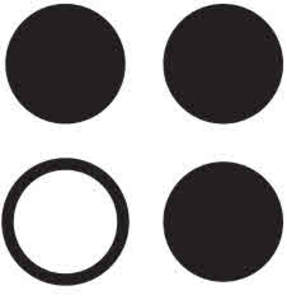

Trade Mark Journal No.2025/014 4 April 2025
UK00004175325 18 March 2025 (3,5,21,44)

- Class 3
- Cosmetics and cosmetic preparations; soap; hand soap; bath and shower gels, not for medical purposes; bubble bath preparations; bath milk; hand milks; body oils; bath oils; skin care oils [cosmetic]; massage oils; aromatic oils; oils for hair conditioning; oils for cleaning purposes; mineral oils [cosmetic]; perfumery; room perfume sprays; aromatherapy preparations; ethereal oils; aromatics [essential oils]; essential oils; hair gel; hair creams; hair balm; hair serums; shampoos; hair masks; hair conditioners; skin cleansers; skin care preparations; cosmetic skin enhancers; hand cleansers; facial cleansers; facial serum for cosmetic use; eye creams; cosmetic hand creams; hand and body butter; hand creams; nail cream; moisturizing creams; anti-ageing creams; skin cream; day creams; night creams; non-medicated face care preparations; body lotions; hand lotions; skin lotions; foot care preparations (non-medicated -); foot balms (Non-medicated -); foot scrubs; face scrub; body scrubs; clay skin masks; skin masks; body mist; pumice stone; lip balms; lip care preparations; lip tints; lipsticks; make-up; cotton pads for cosmetic purposes; concealers; eye brightening correctors; cosmetic powder; eyebrow gel; eyebrow pencils; eyeshadows; eyeliner pencils; mascaras; facial masks; toothpaste; mouthwash; deodorants for the feet; deodorants for personal use.
- Class 5
- Dietary and nutritional supplements; dietary supplements for humans; herbal dietary supplements for persons special dietary requirements; mineral dietary supplements for humans; dietary supplements with a cosmetic effect; dietary supplement drink mixes; food supplements; health food supplements for persons with special dietary requirements; vitamin supplements; protein supplement shakes; vitamin preparations; pharmaceutical preparations for skin care; sanitary preparations for medical purposes; infant formula; plasters, materials for dressings; disinfectants; preparations for destroying noxious animals; alcohol-based antibacterial skin sanitizer gels.
- Class 21
- Sponges; aromatic oil diffusers, other than reed diffusers; shakers; funnels; pill boxes for personal use; bowls; make-up brushes; cosmetics brushes; soap holders; shampoo holders; trays for household purposes.
- Class 44
- Advisory services relating to diet; dietetic counselling services [medical]; dietetic advisory services; weight reduction diet planning services; providing information relating to dietary and nutritional guidance; nutritional advice; provision of information relating to nutrition; providing information about dietary supplements and nutrition.
Zhen B.V.
Representative: Penningtons Manches Cooper LLP